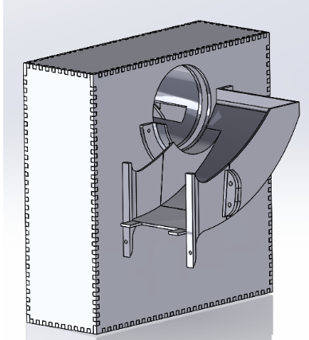
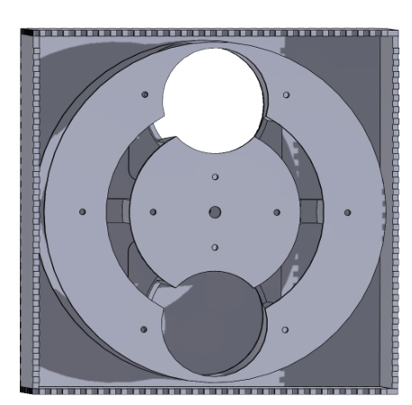
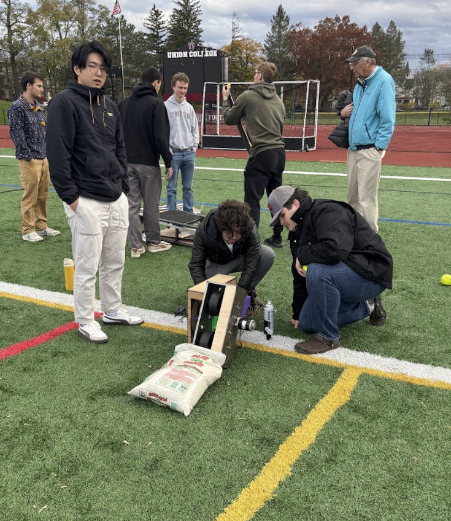
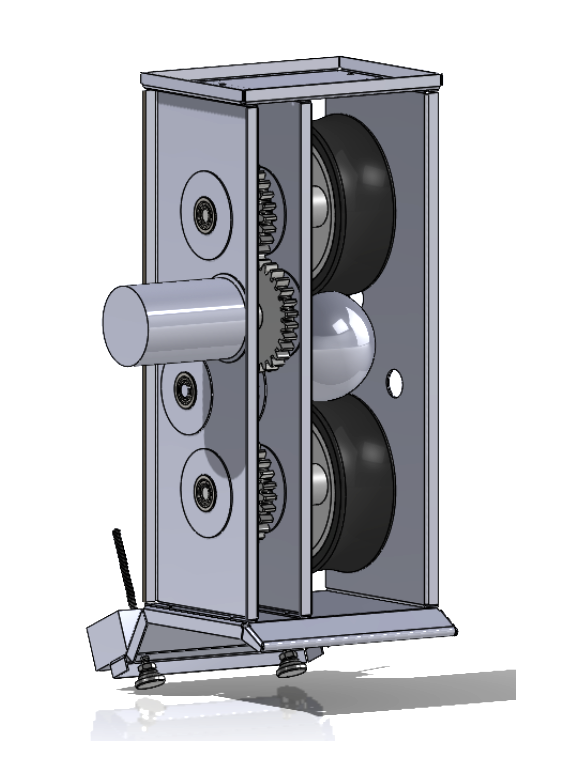
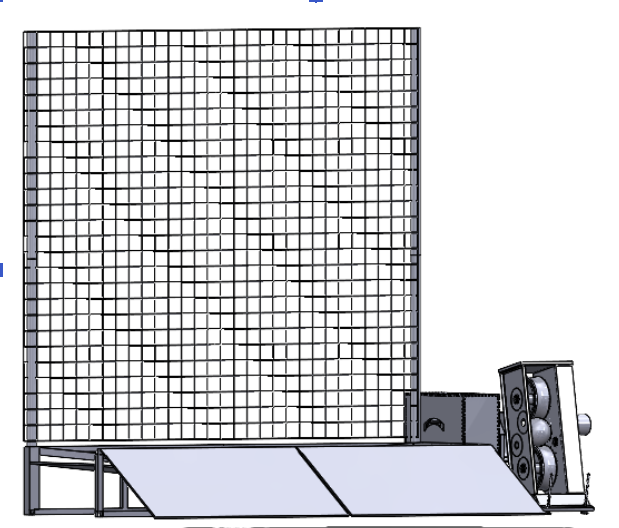

Robo-Catcher: a softball machine that catches and throws back
Pitching machines are everywhere. Machines that catch the ball and return it don’t exist, so our capstone team built one for under $700. I co-led the feeding subsystem and owned all of the machine’s electronics and firmware.

| Role | Feeding-subsystem co-lead · all electronics & firmware | Team | 12 (capture / feeding / return subsystems) |
|---|---|---|---|
| Tools | ESP32 · C++ · MATLAB · NEMA 17 + TB6600 · SolidWorks · laser-cut HDF · 3D printing | Timeline | 2025 · two academic terms |
| Result | 100% feed-indexing success on competition day | Status | Delivered |
The problem
A solo softball player can buy a machine that pitches, but someone still has to walk every ball back. We set out to close the loop: a machine that catches an incoming throw, feeds it internally, and returns it, with no human in the middle. Off-the-shelf solutions don’t exist at any price; ours had to come in under a $700 budget.
Constraints
- Total build cost under $700, with every actuator and driver chosen with cost in mind
- Portable by one person: the finished machine weighs 55 lb and fits in a car trunk
- Assembles at the field with no tools
- Battery-powered: a full practice session on a single 12 V 20 Ah SLA battery
- Safe around players: wireless emergency stop and hardware cut-offs required
My role
Twelve of us split across three subsystems: capture, feeding, and return. I co-led the four-person feeding group and owned the machine’s entire electrical and software system: motor drive, control firmware, wireless interface, and safety logic.
Sizing the feeder before cutting anything
The feeder is a rotating dual-chamber indexer: catch a ball in one chamber, rotate 180°, and present it to the return flywheel. The failure mode that kills machines like this is a stall mid-rotation, so before any parts were made I modeled the load case in MATLAB (a 0.19 kg ball lifted through 180° of rotation) and sized the NEMA 17 stepper and TB6600 driver to a 1.8× torque safety factor.


Electronics and firmware
Everything runs on one ESP32. The firmware handles PWM speed control for the 120 W DC return flywheel (switched through a MOSFET stage), stepper indexing for the feeder, and limit-switch logic so the machine always knows where the chambers are. A wireless remote gives start/stop from across the field, and the emergency cut-offs kill motor power independently of the microcontroller.


The result

- 100% feed-indexing success rate on competition day: every ball delivered, no misses
- <$700 total build cost, on a $700 cap
- 55 lb: one-person portable, fits in a car trunk, assembles with no tools
- 1.5 hr continuous runtime on a single 12 V 20 Ah SLA battery
What I learned
The MATLAB torque study felt slow when teammates were already printing parts, and then the feeder ran a full competition day without a single missed index. Analysis before fabrication is cheaper than iteration after it. If I built it again, I’d add closed-loop feedback on the flywheel RPM so return speed stays constant as the battery sags.